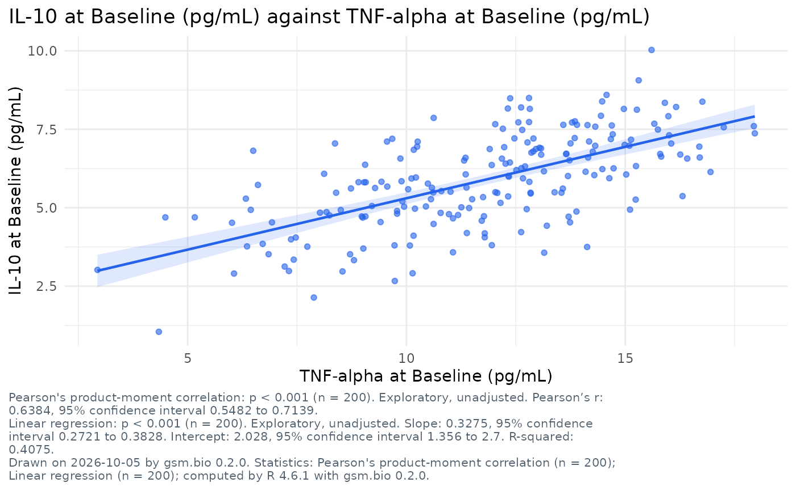

A static ggplot2 figure of the view the association scatter opens on: one
point per participant with a variable on each axis, a panel per level of
panel_by, R's fitted line and its band when fit asks for one, and R's
correlation coefficient of each panel printed under the figure. It is the
figure Widget_AssociationScatter() draws in the browser, from the same
settings; the coefficient is Analyze_Correlation()'s and the line
Analyze_Fit()'s, on the same rows.
Usage
Visualize_AssociationScatter(
dfResults,
dfParticipants = NULL,
lSettings = list()
)Arguments
- dfResults
data.frameLong-format results, one row per participant, biomarker and visit. Column names are supplied bylSettings; the defaults expectUSUBJID/TEST/STRESN/VISIT/VISITNUM/STRESU, the columns of Synthetic_Results.- dfParticipants
data.frameOne row per participant, orNULL. With it the chart has filters, offers its category columns to colour and panel by and its numeric columns on either axis; it also says who the participants are. Without it a colour or a number comes from a column carried on the results rows. Default:NULL.- lSettings
listbio.viz association scatter settings, asWidget_AssociationScatter()takes them, andtitle,subtitleandfootnotes. Default:list().
Titles and footnotes
The settings title, subtitle and footnotes are text with named
placeholders, as for Visualize_GroupComparison(). This figure fills {x}
and {y} (the axes, as their titles read), {n} (the participants drawn),
{filters}, {date} and {version}.
See also
Widget_AssociationScatter(), its interactive twin.
Other figures:
Run_Specifications(),
Visualize_BiomarkerScreen(),
Visualize_CorrelationMatrix(),
Visualize_CrossTab(),
Visualize_GroupComparison(),
Visualize_StratifiedSurvival()
Examples
if (requireNamespace("ggplot2", quietly = TRUE)) {
Visualize_AssociationScatter(
Synthetic_Results,
Synthetic_Participants,
lSettings = list(
x = list(measure = "TNF-alpha", visit = "Baseline"),
y = list(measure = "IL-10", visit = "Baseline"),
fit = "linear",
title = "{y} against {x}"
)
)
}
